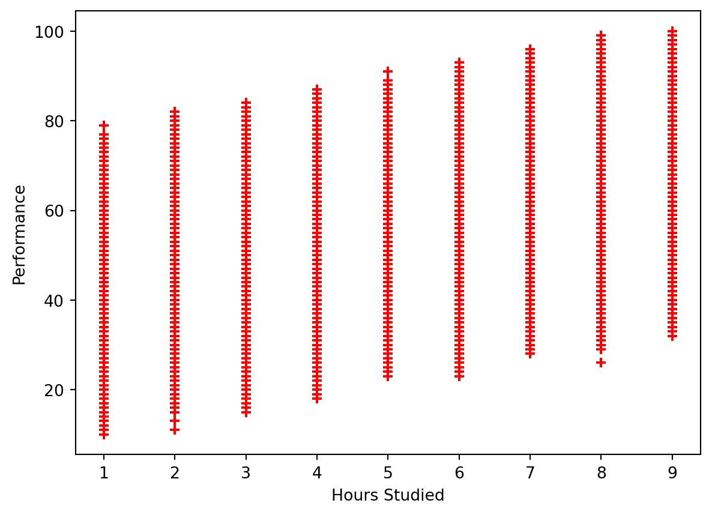
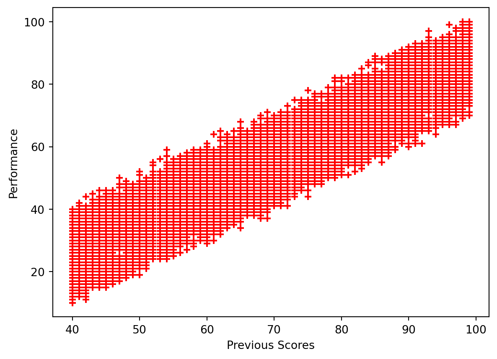
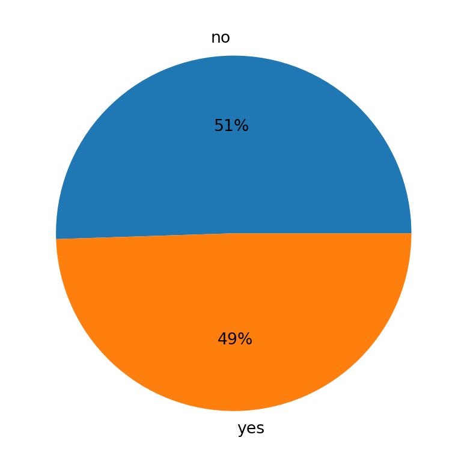
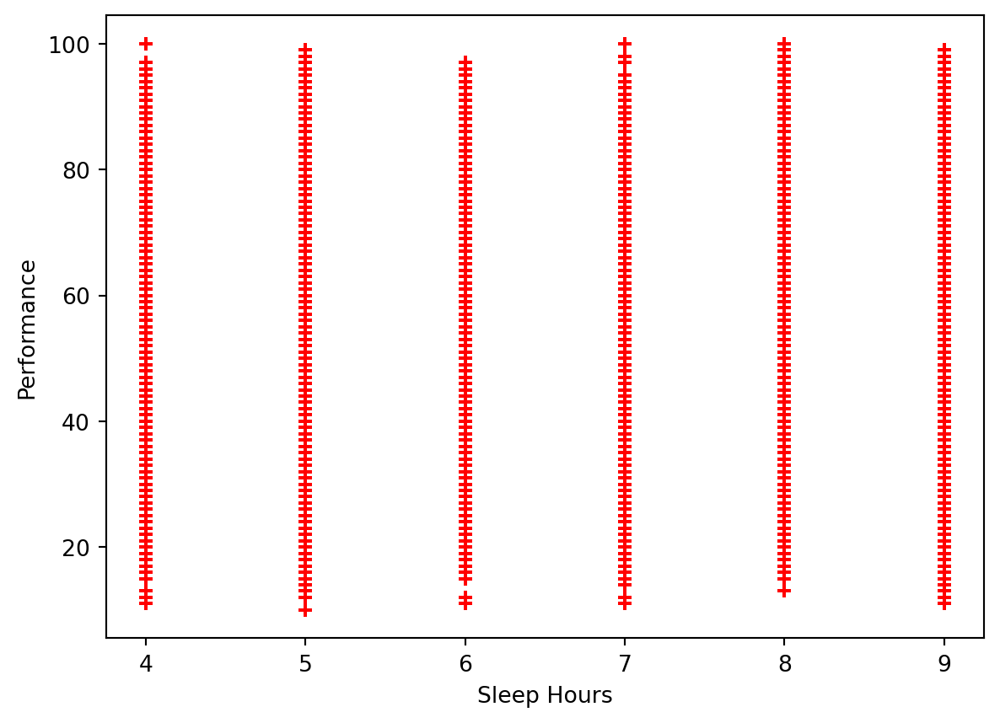
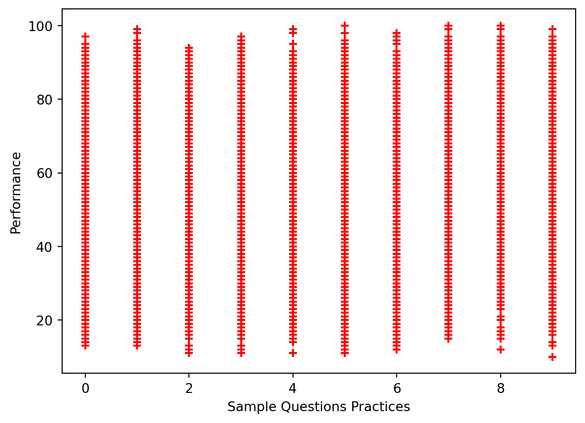
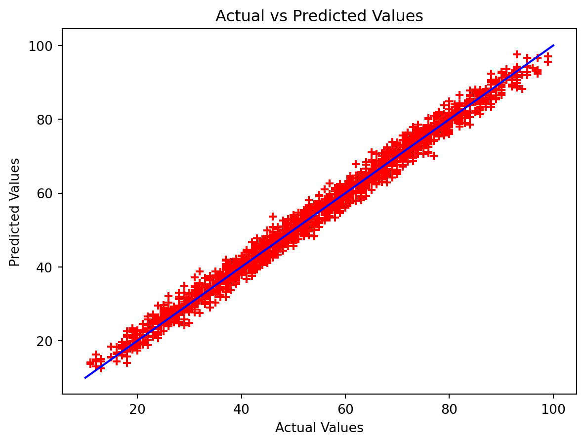

import sys
#Project requires Python 3.7 or above
assert sys.version_info >= (3, 7)
# import libraries
import pandas as pd
import numpy as np
import matplotlib.pyplot as plt
from sklearn.model_selection import train_test_split
from sklearn.linear_model import LinearRegressionBackground
This blog post will cover data analysis with multiple Linear Regression. The data set holds information on the performance of students along with their sleep hours, study hours, previous scores, practiced questions, and extracurricular participation. The goal here, is to identify how these factors affect a student’s performance index. To do this, a multiple Linear Regression will be performed on the data set to analyze whether a correlation does in fact exist.
Setup
We will first begin by checking our python version and importing the necessary libraries for this. We will use Pandas to read the csv file and manipulate its data, numpy for array building, matplotlib’s pyplot to display graphs and plot our data. Scikit learn (sklearn) libraries will also be imported to help perform the Linear Regression.
Data
Let’s start by seeing what our data looks like.
# Read data
data = pd.read_csv("Student_Performance.csv")
print(data.shape)
data.head()(10000, 6)| Hours Studied | Previous Scores | Extracurricular Activities | Sleep Hours | Sample Question Papers Practiced | Performance Index | |
|---|---|---|---|---|---|---|
| 0 | 7 | 99 | Yes | 9 | 1 | 91.0 |
| 1 | 4 | 82 | No | 4 | 2 | 65.0 |
| 2 | 8 | 51 | Yes | 7 | 2 | 45.0 |
| 3 | 5 | 52 | Yes | 5 | 2 | 36.0 |
| 4 | 7 | 75 | No | 8 | 5 | 66.0 |
The dimensions of the data is (10000, 6), which means that the data has 6 columns: Hours Studied, Previous Scores, Extracurricular Activities, Sleep Hours, Sample Question Papers Practiced, and Performance Index. These 6 categories are provided for each student, and there are 10,000 student entries present in the data set. We want to see how the first 5 factors affect a student’s Performance Index.
Plotting the Data
To understand and visualize how each factor individually affects student Performance Index, we will plot the data for each factor.
Plotting the Data
plt.xlabel('Hours Studied')
plt.ylabel('Performance')
plt.scatter(data['Hours Studied'], data['Performance Index'], color='red', marker='+')<matplotlib.collections.PathCollection at 0x12fee1750>
Hours Studied does seem to have a correlation to a student’s Performance Index. A general trend that appears to be present is that the longer a student studies, the more likely they are to perform better.
plt.xlabel('Previous Scores')
plt.ylabel('Performance')
plt.scatter(data['Previous Scores'], data['Performance Index'], color='red', marker='+')<matplotlib.collections.PathCollection at 0x12ff6fa90>
Previous scores appear to have a significant correlation to Performance Index. The better the student’s score previously, the more likely they are to have higher performance.
labels = ['no', 'yes']
plt.pie(data['Extracurricular Activities'].value_counts(), labels=labels, autopct='%1.0f%%')
plt.show()
This shows us the number of student’s participating in Extracurricular Activities. Because the data is provided in Yes or No format, a pie chart makes the most sense to visualize this data. The numbers of students who participate and do not are roughly about the same, with slightly more student not participating in Extracurricular Activites.
plt.xlabel('Sleep Hours')
plt.ylabel('Performance')
plt.scatter(data['Sleep Hours'], data['Performance Index'], color='red', marker='+')<matplotlib.collections.PathCollection at 0x12fffcc90>
The data is spread out fairly similarly. This may indicate that the number of hours slept does not have a significant impact on a student’s performance.
plt.xlabel('Sample Questions Practices')
plt.ylabel('Performance')
plt.scatter(data['Sample Question Papers Practiced'], data['Performance Index'], color='red', marker='+')<matplotlib.collections.PathCollection at 0x130074690>
Looking at the Sample Questions Practiced, it also appears as if the data is about evenly spread out, indicating that it may not have much of an impact on student performance.
Performing the Linear Regression
Before we dive into the Linear Regression, we will have to prepare our data and also split the data set into its respective training and testing sets. For splitting the data, we will use the standard 80-20 split, where 80% of our data will be used to train our multiple Linear Regression model, and the remaining 20% will be used to test the model.
# Prep model, split data into training and testing groups (follow standard 80-20 split)
# Change the yes/no to 1/0 to fit Linear Regression
data['Extracurricular Activities'].replace(('Yes', 'No'), (1, 0), inplace=True)
X = data[['Hours Studied', 'Previous Scores', 'Extracurricular Activities', 'Sleep Hours', 'Sample Question Papers Practiced']]
Y = data['Performance Index']
X_train, X_test, Y_train, Y_test = train_test_split(X, Y, test_size=0.2, train_size=0.8, random_state=42)
print("X-Training Set Dimensions: ", X_train.shape)
print("X-Test Set Dimensions: ", X_test.shape)
print("Y-Training Set Dimensions: ", Y_train.shape)
print("Y-Test Set Dimensions: ", Y_test.shape)X-Training Set Dimensions: (8000, 5)
X-Test Set Dimensions: (2000, 5)
Y-Training Set Dimensions: (8000,)
Y-Test Set Dimensions: (2000,)Now that our data has been fixed and placed into its respective groups as expected, we can begin with the performing the Linear Regression.
# Create Linear Regression Model
reg = LinearRegression()
reg.fit(X_train, Y_train)
predict = reg.predict(X_test)The sklearn library allows us to conduct a Linear Regression. We will fit the data to the model so that it can perform the Linear Regression, and then use the predict functionality on our test set to get a set of the predicted values.
Accuracy of Model
# Check model accuracy to determine how well it fits the actual performance
reg.score(X_test, Y_test)0.9889832909573145The score functionality is similar to producing an r-value to find correlation. The value we have, which is roughly 0.989, indicates our model is very accurate, and that a strong correlation exists between the model predicted values and the actual values.
We can plot the predicted value against the actual values to better visualize how well the model fits the data set.
plt.xlabel('Actual Values')
plt.ylabel('Predicted Values')
plt.title('Actual vs Predicted Values')
plt.scatter(Y_test, predict, color='red', marker='+')
arr = np.array(Y_test)
arr2 = np.array(predict)
plt.plot([10, 20, 40, 60, 80, 100], [10, 20, 40, 60, 80, 100], "b-", label="Predictions")
plt.show()
Let’s also take a look at this in table format using the Pandas DataFrame functionality, which will allow us to get a side-by-side comparison of the results.
pd.DataFrame({"Actual Performance: " : Y_test[:10], "Model Predicted Performance" : predict[:10]})| Actual Performance: | Model Predicted Performance | |
|---|---|---|
| 6252 | 51.0 | 54.711854 |
| 4684 | 20.0 | 22.615513 |
| 1731 | 46.0 | 47.903145 |
| 4742 | 28.0 | 31.289767 |
| 4521 | 41.0 | 43.004570 |
| 6340 | 59.0 | 59.071252 |
| 576 | 48.0 | 45.903475 |
| 5202 | 87.0 | 86.459118 |
| 6363 | 37.0 | 37.700140 |
| 439 | 73.0 | 72.055925 |
The predicted values are very close to the actual values, and we see in the table how some differ more than others. In the first row, the two values differ by about 3 points, but in row 6 the values differ by only about 0.7 points.
Now, let’s find out what our linear equation actually is for this model we built. To do this, we will have to find the coefficients the model created for each factor, as well as our y-intercept.
print("Coefficients: ", reg.coef_)
print("Y-intercept: ", reg.intercept_)Coefficients: [2.85248393 1.0169882 0.60861668 0.47694148 0.19183144]
Y-intercept: -33.92194621555529The coefficients are listed in the order the data was passed in, and from this information we can get our equation. The Linear Regression formula is:
2.85(Hours Studied) + 1.02(Previous Scores) + 0.61(Extracurricular Activities) + 0.48(Sleep Hours) + 0.19(Sample Questions) - 33.92